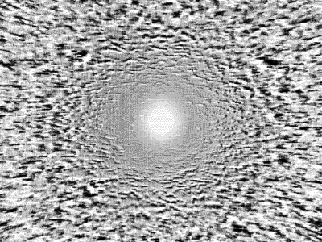

Reflect
Мысли и темы, к которым регулярно возвращаюсь.
Fear : Паралич желаний

Страх убивает любое стремление, если мозг считает его непредсказуемым. Когда волнение дает энергию для толчка, страх лишь парализует тело, отравляет мозг паранойей и сомнениями.
Ради того, чтобы оставить все как есть.
Безопасным. Скучным. Одиноким.
2025-09-18
Absense : Забвение

Кажется, ничего не ждёт после жизни. Даже само ничто останется в стороне, в забвении. Организм разложится на простейшие частицы, душа больше не будет связана с нашим "Я".
Способность мыслить будущее рождает веру в жизнь после жизни. Но всё течёт в настоящем, каждое мгновение. И здесь же останется.
Это случится, рано или поздно, и мы ничего не поймём. Мы больше не будем знать, кто мы есть и кеми были когда-то.
2025-10-16